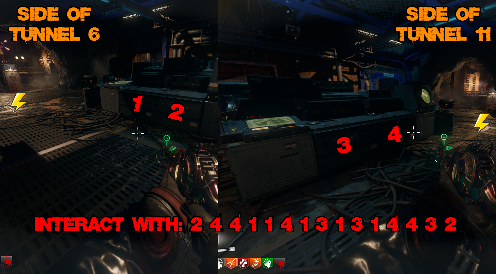
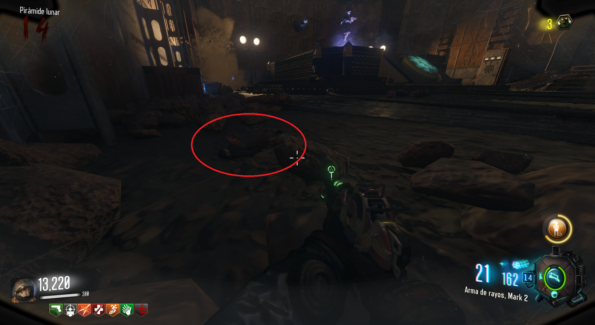
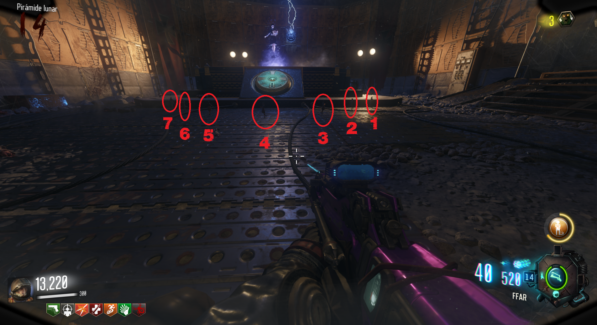
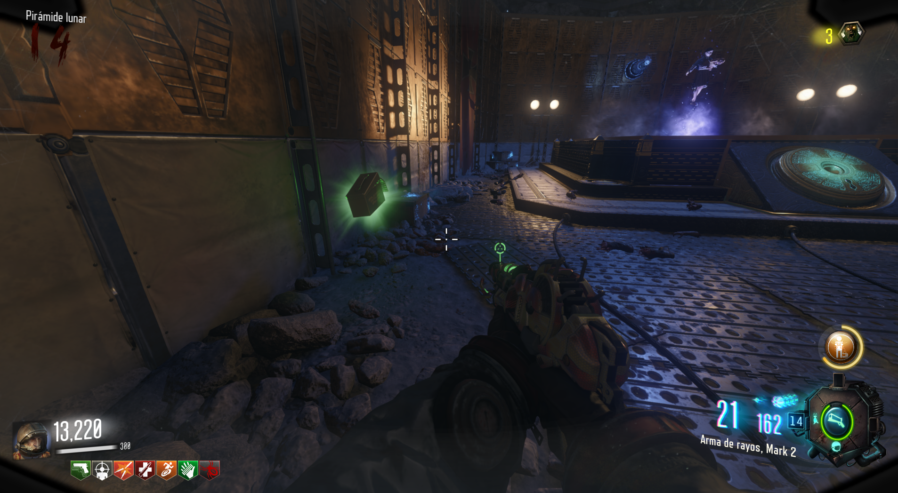

Reproducir canción
Para reproducir la canción deberemos de interactuar con las cuatro consolas de la sala frente a electricidad.
Las enumeramos del 1 al 4 para facilitar la secuencia.
La consola 1 y 2 estarán mirando a la entrada del Túnel 6.
La consola 3 y 4 estarán mirando a la entrada del Túnel 11.
Tendremos que interactuar con ellas en el sigueinte orden:

Tras un sonido de confirmación, iremos a la izquierda de la pirámide para interactuar con la muñeca de Samantha.

Aparecerán 7 muñecas frente a la pirámide y tendremos que dispararle de derecha a izquierda a cada una, siguiendo este orden:

Hecho esto, interactuamos con la muñeca otra vez, la canción sonará y un Máxima Munición aparecerá.
